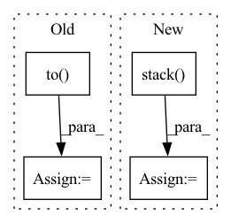

Pattern ID :4778

Before Change
if i >= 10: break
frames = frames.to(DEVICE) // [1, T, 3, h, w]
frames_vis = postprocess_img(frames.squeeze(dim=0)) // [T, 3, h, w]
input = frames[:, :VIDEO_IN_LENGTH] // [1, t, 3, h, w]
pred_rgb = pred_rgb_model.pred_n(input, pred_length=VIDEO_PRED_LENGTH) // [1, T, 3, h, w]
pred_rgb_vis = postprocess_img(pred_rgb) // [T, 3, h, w]
pred_rgb = torch.cat([input, pred_rgb], dim=1)
pred_rgb = torch.stack([seg_model(pred_rgb[:, i]) for i in range(pred_rgb.shape[1])], dim=1)
pred_rgb = pred_rgb.argmax(dim=2).squeeze() // [T, h, w]
pred_then_colorized_vis = colorize_semseg(postprocess_mask(pred_rgb), num_classes=SYNPICK_CLASSES) // [T, 3, h, w]
frames_seg = [seg_model(frames[:, i]).argmax(dim=1) for i in range(frames.shape[1])]
frames_seg = torch.stack(frames_seg, dim=1) // [1, 1, h, w]
input_seg = frames_seg[:, :VIDEO_IN_LENGTH] // [1, t, 1, h, w]
pred_mask = pred_mask_model.pred_n(input_seg, pred_length=VIDEO_PRED_LENGTH)
After Change
pred_then_colorized_vis = colorize_semseg(postprocess_mask(pred_rgb), num_classes=SYNPICK_CLASSES).transpose(0, 3, 1, 2) // [T, 3, h, w]
frames_seg = torch.stack([seg_model(frames[:, i]) for i in range(frames.shape[1])], dim=1).argmax(dim=2) // [1, T, 1, h, w]
frames_seg_in = torch.stack([(frames_seg == i) for i in range(SYNPICK_CLASSES)], dim=2).float() // [1, T, c, h, w] one-hot float
input_seg = frames_seg_in[:, :VIDEO_IN_LENGTH] // [1, t, c, h, w]
pred_mask = pred_mask_model.pred_n(input_seg, pred_length=VIDEO_PRED_LENGTH).argmax(dim=2) // [1, n, 1, h, w]
pred_mask = torch.cat([input_seg.argmax(dim=2), pred_mask], dim=1).squeeze() // [T, h, w]
In pattern: SUPERPATTERN
Frequency: 4
Non-data size: 4
Instances
Fragment ID: 16904963
Project Name: ais-bonn/vp-suite
Commit Name: 13016d4ab8ba4f8e7ee087155a6c5171f4d00ba3
Time: 2021-08-02
Author: boltres@ais.uni-bonn.de
File Name: scripts/visualize_4_way.py
M Class Name: AnonimousClass
N Class Name: AnonimousClass
M Method Name: visualize_4_way(1)
N Method Name: visualize_4_way(1)
M Parent Class:
N Parent Class:
M File Name: scripts/visualize_4_way.py
N File Name: scripts/visualize_4_way.py
M Start Line: 16
M End Line: 73
N Start Line: 17
N End Line: 74
'>
Before Change
edge_index = torch.tensor([row, col], dtype=torch.long)
edge_type = torch.tensor(edge_type, dtype=torch.long)
edge_attr = F.one_hot(edge_type, num_classes=len(self.bonds)).to(torch.float)
// bond_features = torch.tensor(bond_features, dtype=torch.float).view(len(bond_type), -1)
perm = (edge_index[0] * N + edge_index[1]).argsort()
edge_index = edge_index[:, perm]
After Change
bond_features.append(bond_feature)
edge_index = torch.tensor([row, col], dtype=torch.long)
edge_attr = torch.stack(bond_features,dim=0)
perm = (edge_index[0] * N + edge_index[1]).argsort()
edge_index = edge_index[:, perm]
edge_attr = edge_attr[perm]
'>
Fragment ID: 16904979
Project Name: hannesstark/3dinfomax
Commit Name: 445adc95e71417794e8d36efe7a852b7de4cc6d5
Time: 2021-08-01
Author: hannes.staerk@gmail.com
File Name: datasets/file_loader_geomol_qm9.py
M Class Name: FileLoader
N Class Name: FileLoader
M Method Name: featurize_mol(2)
N Method Name: featurize_mol(2)
M Parent Class: Dataset
N Parent Class: Dataset
M File Name: datasets/file_loader_geomol_qm9.py
N File Name: datasets/file_loader_geomol_qm9.py
M Start Line: 125
M End Line: 145
N Start Line: 123
N End Line: 146
'>
Before Change
// build an iterator for going over all J values
Jgen = list(itertools.product(*Jgen))
Jgen = torch.tensor(Jgen).permute(1, 0).to(dtype=torch.long, device=device)
if interp_mats is None:
// set up params if not using sparse mats
params = {
After Change
// phase for fftshift
y[-1] = y[-1] * tf.exp(1j * tf.linalg.matvec(om[b], n_shift))[None, ...]
y = tf.stack(y)
return y
'>
Fragment ID: 16904962
Project Name: zaccharieramzi/tfkbnufft
Commit Name: afe8894e906b6b5b97467a11098e4e412e8ade4c
Time: 2020-03-01
Author: zaccharie.ramzi@gmail.com
File Name: tfkbnufft/nufft/interp_functions.py
M Class Name: AnonimousClass
N Class Name: AnonimousClass
M Method Name: kbinterp(4)
N Method Name: kbinterp(4)
M Parent Class:
N Parent Class:
M File Name: tfkbnufft/nufft/interp_functions.py
N File Name: tfkbnufft/nufft/interp_functions.py
M Start Line: 217
M End Line: 280
N Start Line: 219
N End Line: 280
'>
Before Change
for (img, label, fname) in pbar:
img = img.to(device)
label = label.to(device)
fnames += [*fname]
batch_size = img.shape[0]
After Change
sorted_labels = sort_items_by_keys(
fnames, labels, sorted_filenames
)
embeddings = np.stack(sorted_embeddings)
labels = np.stack(sorted_labels)
return embeddings, labels, sorted_filenames
'>
Fragment ID: 16904973
Project Name: lightly-ai/lightly
Commit Name: d3324aaeb244a867cb639896016c4d528c44fc3b
Time: 2022-01-19
Author: malte.ebner@gmail.com
File Name: lightly/embedding/embedding.py
M Class Name: SelfSupervisedEmbedding
N Class Name: SelfSupervisedEmbedding
M Method Name: embed(3)
N Method Name: embed(4)
M Parent Class: BaseEmbedding
N Parent Class: BaseEmbedding
M File Name: lightly/embedding/embedding.py
N File Name: lightly/embedding/embedding.py
M Start Line: 72
M End Line: 138
N Start Line: 118
N End Line: 164